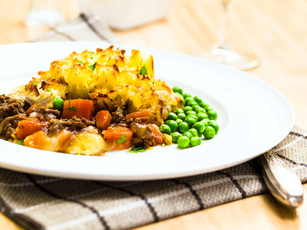

Cottage pie

This great-value family favourite freezes beautifully and is a guaranteed crowd-pleaser
Ingredients
- 3 carrots, chopped
- 3 celery sticks, chopped
- 2 garlic cloves, finely chopped
- 3 tbsp plain flour
- 1 tbsp tomato purée
- large glass red wine (optional)
- 850ml beef stock
- 4 tbsp Worcestershire sauce
- few thyme sprigs
- 2 bay leaves
- For the mash
- 1.8kg potatoes, chopped
- 225ml milk
- 25g butter
- 200g strong cheddar, grated
- freshly grated nutmeg
Steps
- Heat 1 tbsp olive oil in a large saucepan and fry 1¼ kg beef mince until browned – you may need to do this in batches. Set aside as it browns.
- Put the other 2 tbsp olive oil into the pan, add 2 finely chopped onions, 3 chopped carrots and 3 chopped celery sticks and cook on a gentle heat until soft, about 20 mins.
- Add 2 finely chopped garlic cloves, 3 tbsp plain flour and 1 tbsp tomato purée, increase the heat and cook for a few mins, then return the beef to the pan.
- Pour over a large glass of red wine, if using, and boil to reduce it slightly before adding the 850ml beef stock, 4 tbsp Worcestershire sauce, a few thyme sprigs and 2 bay leaves.
- Bring to a simmer and cook, uncovered, for 45 mins. By this time the gravy should be thick and coating the meat. Check after about 30 mins – if a lot of liquid remains, increase the heat slightly to reduce the gravy a little. Season well, then discard the bay leaves and thyme stalks.
- Meanwhile, make the mash. In a large saucepan, cover the 1.8kg potatoes which you've peeled and chopped, in salted cold water, bring to the boil and simmer until tender.
- Drain well, then allow to steam-dry for a few mins. Mash well with the 225ml milk, 25g butter, and three-quarters of the 200g strong cheddar cheese, then season with
- Spoon the meat into 2 ovenproof dishes. Pipe or spoon on the mash to cover. Sprinkle on the remaining cheese.
- If eating straight away, heat oven to 220C/200C fan/gas 7 and cook for 25-30 mins, or until the topping is golden.